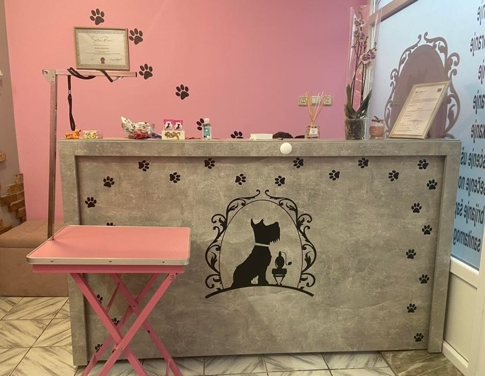

Udomljavanje predstavlja humani gest ljudi koji vole životinje, ali i pokazuju brigu za svoju životnu okolinu. Napušteni ili rođeni u okruženju bez vlasnika, odgovarajuće nege i zdravstvene zaštite predstavljaju potencijalnu opasnost za druge životinje, ali i za nas ljude. Životinja koja je udomljena beskrajno je zahvalna, i svakog dana vam pokazuje svoju zahvalnost.
Obaveze potencijalnog vlasnika su:
- Potpisivanje ugovora o odgovornom vlasništvu
- Obezbeđivanje trajnog smeštaja, hrane, redovne veterinarske nege
- Da obezbedi da se životinja ne kreće samostalno van stana/kuće
- Sterilizacija/kastracija životinje ( ukoliko je usvojena kao štene)
- Ne napuštanje i ne otuđivanje životinje
Za udomljavanje je potrebna lična karta.
U našoj GALERIJI SLIKA možete pogledati slike pasa koji traže dom, i možda se i odlučite za nekog.
Besplatno kupanje
U saradnji sa salonom za pse „Šapica SD“ za svakog udomljenog psa iz prihvatilišta dobija se jedno besplatno kupanje uz prethodni dogovor oko termina sa njima.
